EKYLIBRE : GUIDE DE DÉMARRAGE RAPIDE
EKYLIBRE : DÉMARRAGE RAPIDE
GUIDE DE DÉMARRAGE RAPIDE
1 - Prérequis
2 - Introduction
3 - Parcellaire
4 - Exploitation
5 - L’interface
6 - Stock & Personnel
7 - Production
8 - Accès
Dans ce chapitre vous allez découvrir :

Les informations affichées et la liste des champs à renseigner peuvent occuper une hauteur importante dans la fenêtre principale.
Réduisez ou développez les informations des sections avec les boutonset/ouà droite de la fenêtre principale.
A – Procédure pour afficher un exercice comptable
Le processus suivant vous guide pour afficher l'exercice comptable de votre choix.

Cliquez sur le lien "Comptabilité" dans le "Menu principal" ou sur le bouton "Comptabilité" de la page d'accueil :
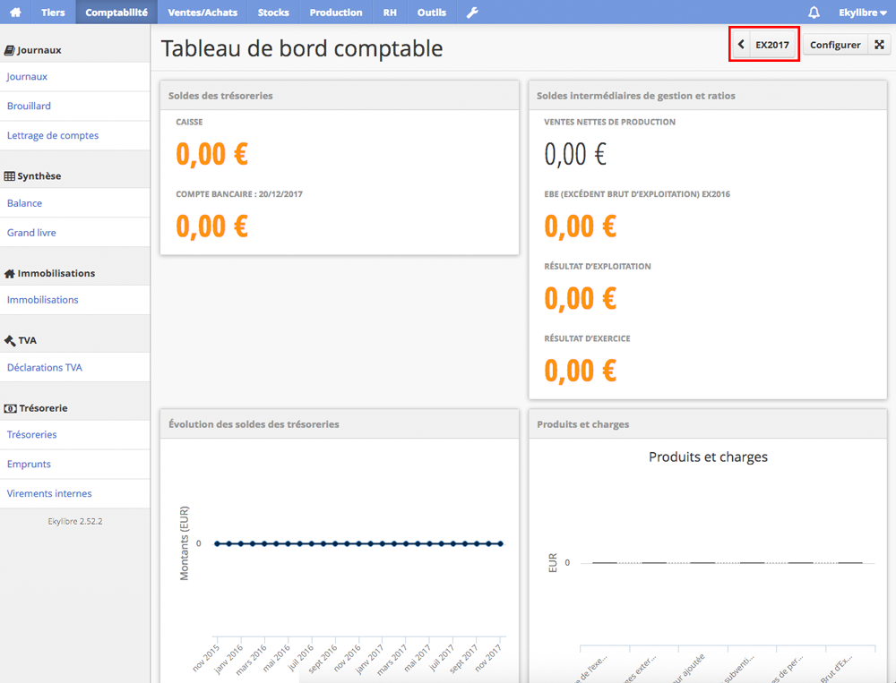

Cliquez sur les flèches à gaucheet à droitepour naviguer entre les exercices en haut à droite de la fenêtre principale et cliquez sur l'annéepour sélectionner l'exercice comptable de votre choix.
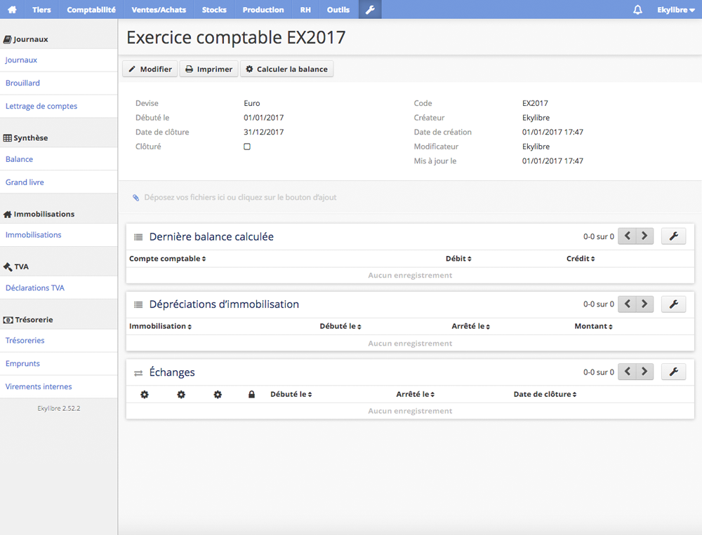
Les exercices comptables créés dans Ekylibre dépendent des informations renseignées dans l'assistant de démarrage. Si vous avez saisi la date de création de l'exploitation, l'application a créé autant d'exercices comptables que d'années d'ancienneté. Si vous n'avez pas renseigné la date de création, l'application a créé automatiquement dix exercices (un pour l'année en cours et neuf pour les années précédentes). Vous pouvez supprimer les exercices inutiles mais nous vous conseillons d'en conserver quand même un ou deux.
B – Procédure pour supprimer un exercice comptable
Le processus suivant vous guide pour supprimer un exercice comptable de votre choix.
Cliquez sur la clef anglaisedans le "Menu principal" ou sur le bouton "Configuration" de la page d'accueil :
Dans la barre latérale du module, cliquez sur "Exercices comptables" dans la rubrique "Comptabilité" symbolisée par l'icône d'un billetpour afficher la liste des exercices.
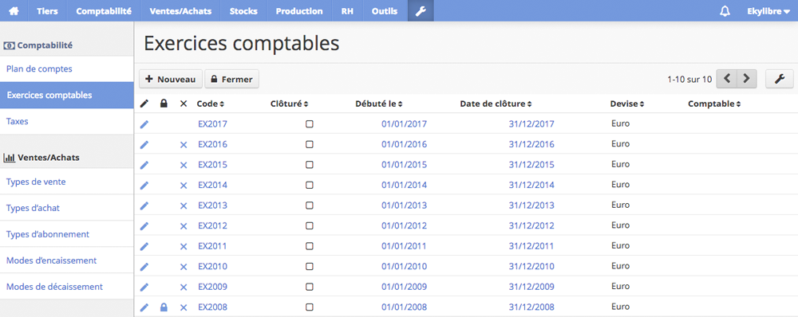
Cliquez sur la croix bleueen face de l'exercice que vous souhaitez supprimer et confirmez l'opération.
L'article 73 du code général des impôts fixe à douze mois la durée de l'exercice comptable des exploitants agricoles soumis à un régime réel d'imposition, sans que cet exercice soit nécessairement aligné sur l'année civile.
Généralement, la date de clôture de l'exercice comptable retenue (31 décembre) coïncide avec la fin de l'année civile, mais ce n'est pas une obligation. Une date clôturant un trimestre civil (31 mars, 30 juin…) est également souvent choisie pour des raisons de simplicité.
C – Procédure pour modifier un exercice comptable
Le processus suivant vous guide pour modifier un exercice comptable de votre choix.
Cliquez sur la clef anglaisedans le "Menu principal" ou sur le bouton "Configuration" de la page d'accueil :
Dans la barre latérale du module, cliquez sur "Exercices comptables" dans la rubrique "Comptabilité" symbolisée par l'icône d'un billetpour afficher la liste des exercices.
Cliquez sur l'icône "Crayon"devant le code de l'exercice et saisissez les nouvelles dates, puis cliquez sur le bouton "Modifier" pour confirmer l'opération.
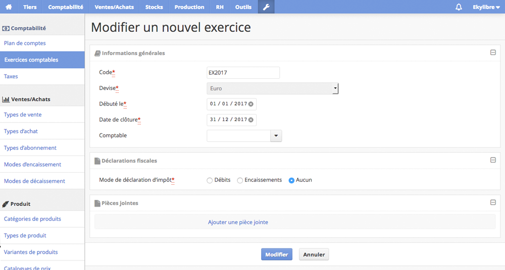

configuration à faire pour &
Deux plans de compte sont disponibles dans l'application : le Plan comptable agricole ‒ Arrêté du 11/12/1986 et le Plan comptable général de 1982 ‒ Arrêté du 14/12/2007.
À la première utilisation de l'application, nous vous invitons à vérifier le bon chargement de l'un des deux et/ou de sélectionner celui que souhaitez utiliser.
A – Procédure pour valider le plan de comptes
Le processus suivant vous guide pour vérifier et/ou sélectionner le plan de comptes de votre choix.
Cliquez sur la clef anglaise dans le "Menu principal" ou sur le bouton "Configuration" de la page d'accueil :
Dans la barre latérale du module, cliquez sur "Plan de comptes" dans la rubrique "Comptabilité" symbolisée par l'icône d'un billetpour afficher la liste des comptes.
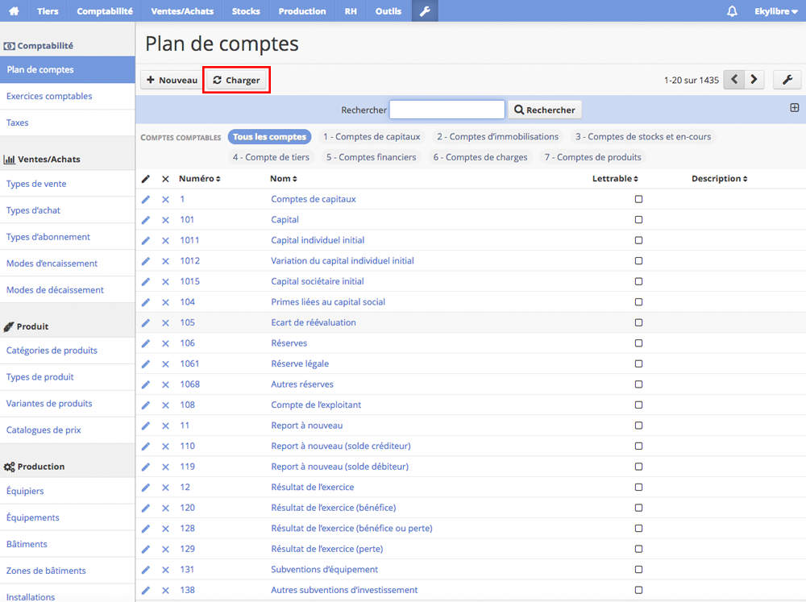
Si le plan de comptes ne s'affiche pas ou que vous souhaitez en changer, cliquez sur le bouton "Charger" et sélectionnez le plan de comptes à mettre en œuvre. Cliquez sur le bouton "Charger" pour valider l'opération.
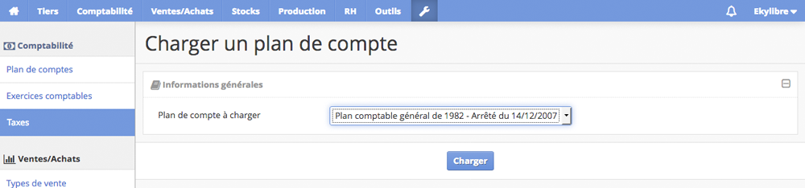
configuration à faire pour
Plusieurs taux de TVA sont définis dans l'application qui sont inutiles ou qui ne sont plus en vigueur depuis la dernière modification intervenue au 1er janvier 2014. Vous pouvez donc en supprimer si vous le désirez.
A – Procédure pour supprimer des taux de TVA
Le processus suivant vous guide pour supprimer les taux de TVA de votre choix.
Cliquez sur la clef anglaise dans le "Menu principal" ou sur le bouton "Configuration" de la page d'accueil :
Dans la barre latérale du module, cliquez sur "Taxes" dans la rubrique "Comptabilité" symbolisée par l'icône d'un billetpour afficher la liste des taux de TVA.
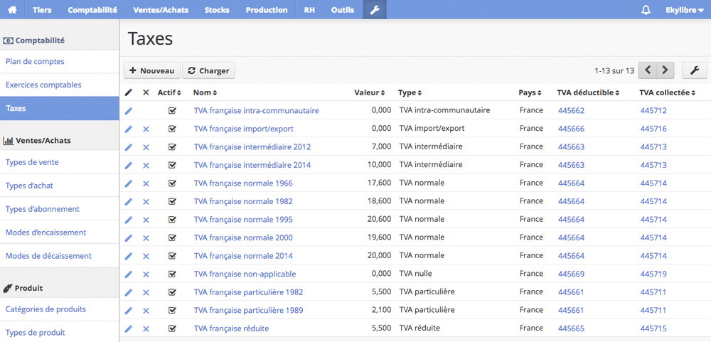
Cliquez sur la croix bleuedevant un taux de TVA et confirmez sa suppression. Notez qu'en cas de changement du taux normal, des taux réduits ou des taux particuliers, vous pourrez toujours en ajouter de nouveaux dans l'application.
configuration à faire pour
Si vous utilisez Ekylibre pour réaliser la gestion commerciale et les opérations de facturation achats/ventes, nous vous conseillons de paramétrer vos comptes bancaires dans l'application.
A – Procédure pour paramétrer un compte bancaire
Le processus suivant vous guide pour paramétrer un compte bancaire.
Cliquez sur le lien "Comptabilité" dans le "Menu principal" ou sur le bouton "Comptabilité" de la page d'accueil :
Dans la barre latérale du module, cliquez sur "Trésoreries" dans la rubrique "Trésorerie" symbolisée par l'icône d'un billetpour afficher la liste des moyens d'encaissement/décaissement.
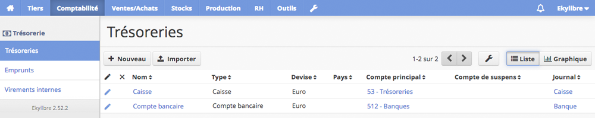
Cliquez sur le bouton “Nouveau”, sélectionnez le type de “Trésorie” et remplissez tous les champs obligatoires signalés par une astérisque de couleur rouge avec les informations requises pour la définir correctement. Vous pouvez également partir du “Compte bancaire” déjà défini dans l'application et le modifier.
Cliquez sur pour valider l'opération.
pour valider l'opération.
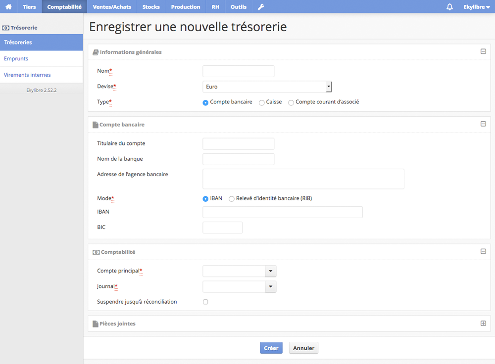
Tous les produits définis dans Ekylibre sont associés à une catégorie qui est un profil de gestion regroupant les comptes comptables applicables pour les écritures dans les journaux : compte de produit et/ou compte d'achat et/ou compte de stock et/ou compte d'immobilisation.
Ces articles sont également rattachés à des types (familles) identifiés par un profil technique comme par exemple un service, un équipement, un produit phytosanitaire.
La variante est finalement la dénomination d'un article appartenant simultanément à une catégorie (profil de gestion) et à un type (profil technique).
A – Procédure pour afficher une liste dans les "Produits"
Le processus suivant vous guide pour mieux comprendre le système de classement utilisé dans l'application.
Pour afficher les “Catégorie de produits”, les “Types de produits” ou les “Variantes de produits”, cliquez sur la clef anglaise dans le "Menu principal" ou sur le bouton "Configuration" de la page d'accueil :
Dans la barre latérale du module, cliquez sur la liste à afficher dans la rubrique "Produits" symbolisée par l'icône d'un épi.
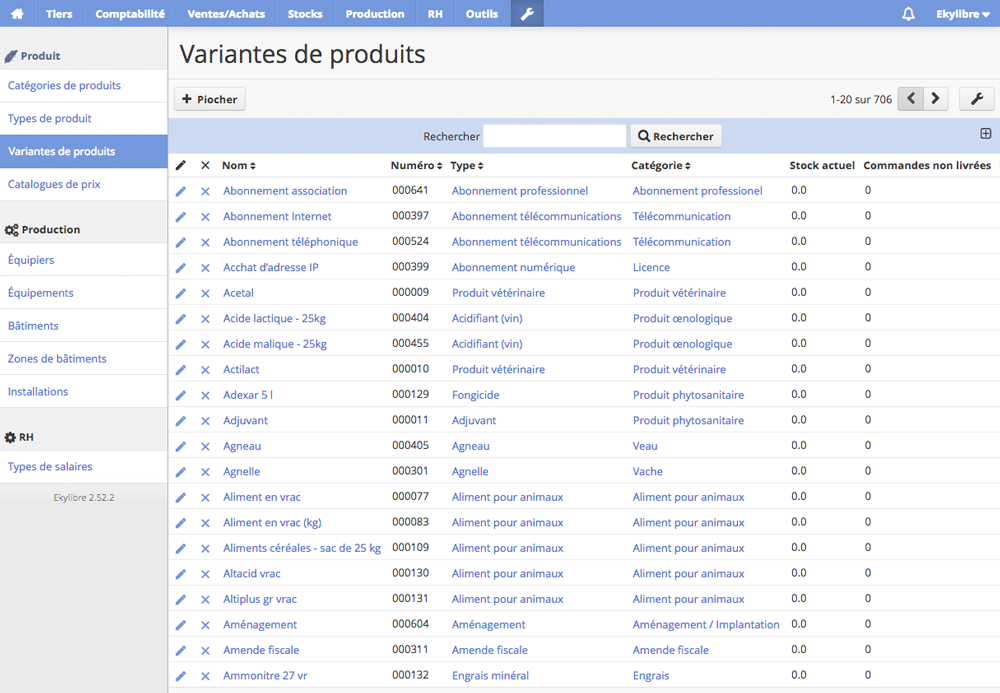
Notez que si vous avez supprimé par erreur une catégorie, un type ou une variante, vous pourrez l'intégrer à nouveau dans la liste en cliquant sur le bouton “Piocher”.
Si vous ne trouvez pas un article spécifique dans la liste proposée pour en réaliser le stockage (comme par exemple une variété de semence), vous pouvez créer une nouvelle variante de produit.
B – Procédure pour créer une nouvelle variante
Le processus suivant vous guide pour créer une nouvelle variante (un nouvel article).
Cliquez sur la clef anglaisedans le "Menu principal" ou sur le bouton "Configuration" de la page d'accueil :
Dans la barre latérale du module, cliquez sur "Types de produits" dans la rubrique "Produits" symbolisée par l'icône d'un épi.
Parcourez la liste des types avec les flècheseten haut à droite de l'écran ou utilisez le champ “Rechercher” et saisissez un mot-clef comme par exemple semence. Sélectionnez dans la liste un type générique de l'article à créer, puis cliquez sur le nom du type.
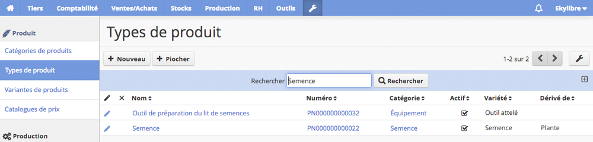

Cliquez sur le bouton "Nouveau" et saisissez les informations concernant sa dénomination et les bons indicateurs pour la définir correctement.
Cliquez sur pour valider l'opération.
pour valider l'opération.
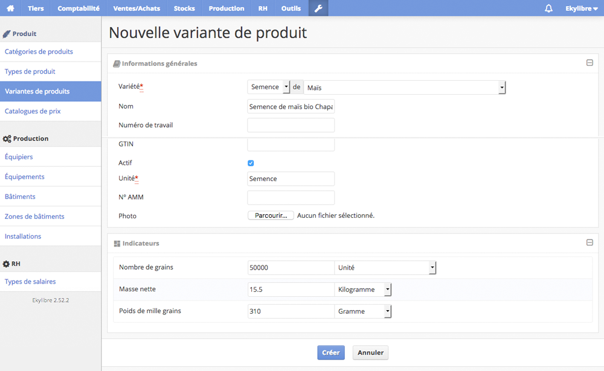
La gestion des stocks représente un axe pricipal dans l'utilisation de l'application.
Nous allons voir dans cette section comment générer le stockage d'un intrant pour pouvoir procéder plus tard à une intervention (semis).

La date de réception d'un nouveau colis doit être antérieure à la date d'intervention qui utilisera la nouvelle ressource, sinon il sera impossible de réaliser la saisie de l'intervention dans l'application.
A – Procédure pour stocker une variante
Le processus suivant vous guide pour ajouter une variante en stock.
Cliquez sur le lien "Stocks" dans le "Menu principal" ou sur le bouton "Stocks" de la page d'accueil :
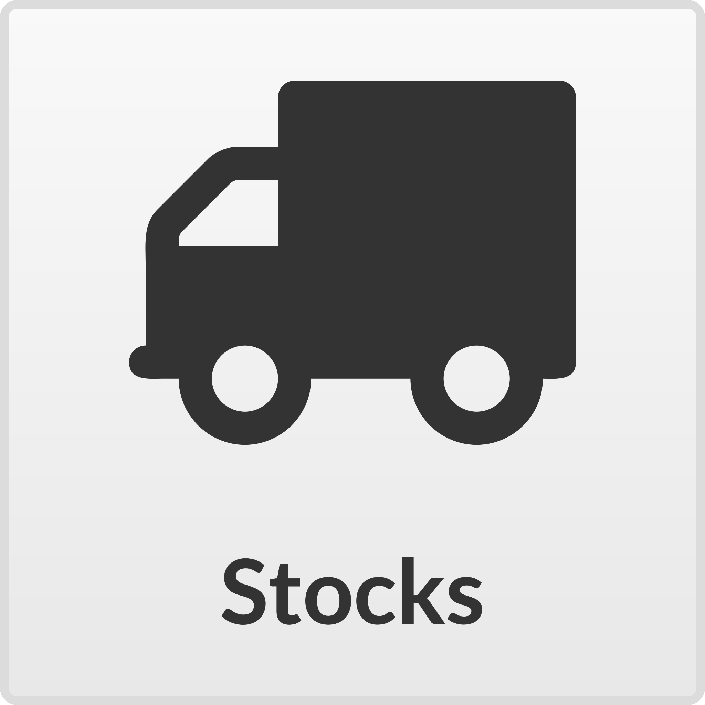
Dans la barre latérale du module, cliquez sur "Colis" dans la rubrique "Mouvements" symbolisée par l'icône d'un camion.
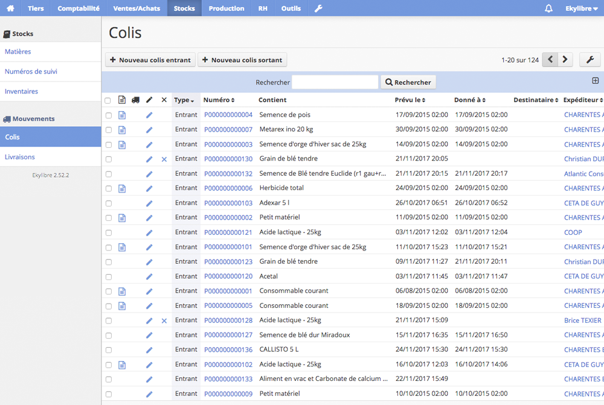
Cliquez sur "Nouveau colis entrant", puis remplissez tous les champs signalés par une astérisque de couleur rouge avec les informations requises pour le définir correctement.

Si l'expéditeur du colis (le fournisseur) n'existe pas encore, créez-en un nouveau à la volée en sélectionnant "Ajouter un nouvel enregistrement" dans le menu "Expéditeur", saisissez les informations le concernant et validez l'opération en cliquant sur le bouton .
.
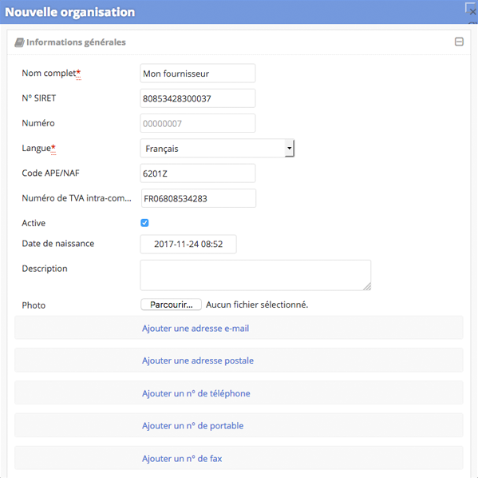
Cliquez sur le bouton "Ajouter un élément". Remplissez les champs dans le panneau "Éléments". Vous pouvez ajouter plusieurs éléments dans un même colis (ne pas oublier les frais de transport le cas échéant).
Cliquez sur pour valider l'opération.
pour valider l'opération.
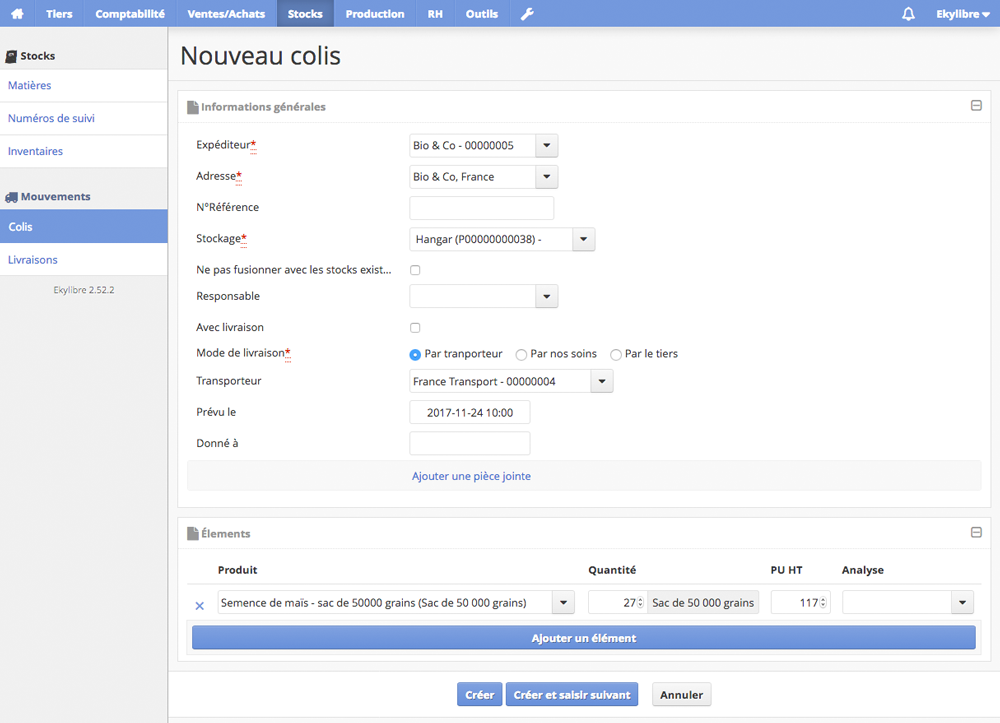

Modifiez successivement le statut du colis en cliquant sur les étapes en couleur :
"Brouillon""Commandé""En préparation""Prêt""Reçu".
Vous pouvez aussi valider sa réception directement en cliquant sur le bouton "Reçu".
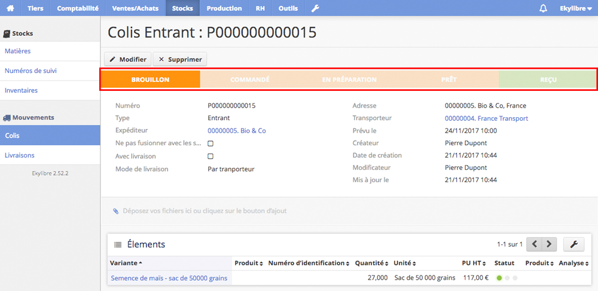
Cliquez sur "Matières" dans le menu des "Stocks" symbolisé par l'icône d'un sac de grainspour contrôler le bon enregistrement de votre nouveau colis entrant dans la liste des éléments en stock.
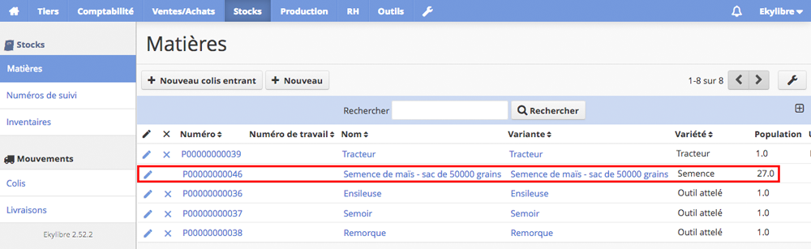
Vous pouvez maintenant réaliser une intervention comme par exemple un semis (voir chapitre 7 – Production) et vous arrêter là si vous le souhaitez. Vous pouvez aussi procéder à la facturation et aux écritures comptables issues de la réception de ce colis.
À la création de votre ferme, si vous souhaitez intégrer vos stocks existants dans l'application, nous vous recommandons de vous faire un colis entrant à vous-même regroupant plusieurs variantes (articles) avec les bonnes quantités et daté du premier jour de l'exercice en cours.
Des interactions existent entre les différents modules d'Ekylibre : les stocks d'intrants permettent de réaliser des interventions sur les cultures. Les récoltes issues des cultures seront à leur tour stockées. Les colis entrants permettent de consigner des achats alors que les colis sortants d'enregistrer des ventes pour enfin réaliser les décaissements et les encaissements donnant lieu à des écritures comptables.
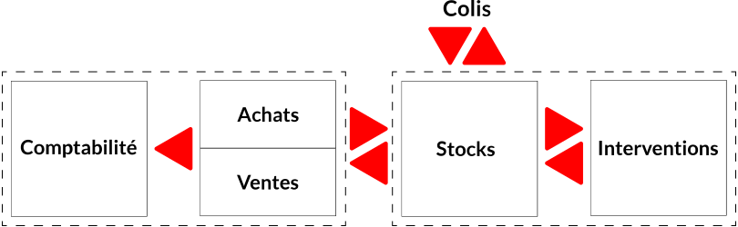
Flux entre les modules dans Ekylibre
Les mouvements de stocks de matières peuvent être utilisés pour réaliser la facturation des achats et des ventes.
A – Procédure pour passer en facturation un colis entrant
Le processus suivant vous guide pour passer en facture d'achat un colis entrant.
Cliquez sur le lien "Stocks" dans le "Menu principal" ou sur le bouton "Stocks" de la page d'accueil :
Dans la barre latérale du module, cliquez sur "Colis" dans la rubrique "Mouvements" symbolisée par l'icône d'un camion.
Cochez la case à gauche du nom du colis à facturer pour afficher le bouton "Facturer" au dessus de la liste, puis cliquez sur ce bouton.
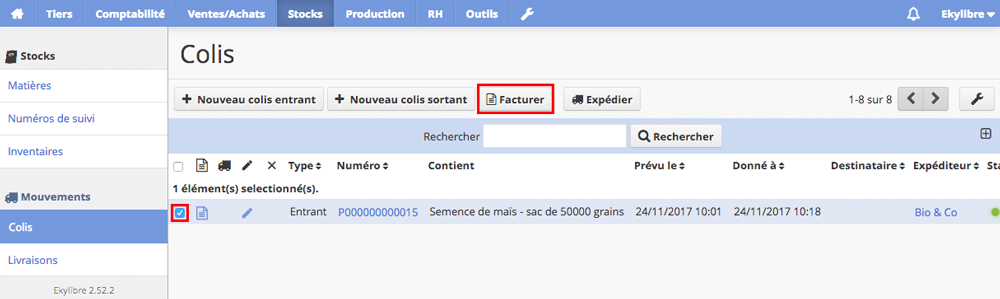

Modifiez successivement le statut de l'achat en cliquant sur les étapes en couleur :
"Devis brouillon""Devis envoyé""Commande""Facture".
Vous pouvez aussi valider la facturation directement en cliquant sur le bouton "Facture".
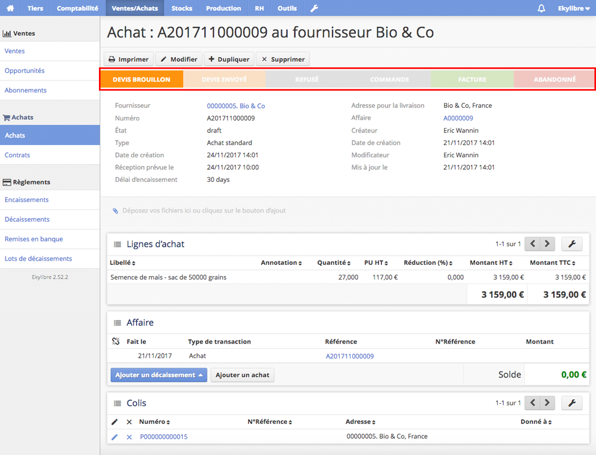
La nouvelle facture à payer est établie. Vous pouvez réaliser l'écriture comptable du décaissement immédiatement ou plus tard. Cliquez sur le bouton "Ajouter un décaissement" pour accéder directement aux options du règlement de la facture. Vous pourrez revenir ultérieurement aux "Décaissements" via le module "Ventes/achats".
Cliquez sur pour valider l'opération.
pour valider l'opération.
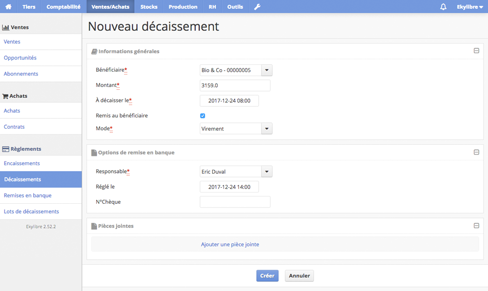
Vous pouvez réaliser les inventaires dans l'application pour :
a - fixer la valeur du stock présent au sein de l’exploitation.
b - vérifier si aucune marchandise ne manque, en d'autres termes de constater si il y a eu perte ou vol.
c - vérifier une éventuelle erreur de gestion.
Vous êtes libre de la fréquence des inventaires : mensuel, trimestriel, annuel. Chaque inventaire doit avoir un nom unique, un exercice et une date d'achèvement.
A – Procédure pour réaliser un inventaire
Le processus suivant vous guide pour réaliser un inventaire des matières en stock.
Cliquez sur le lien "Stocks" dans le "Menu principal" ou sur le bouton "Stocks" de la page d'accueil :
Dans la barre latérale du module, cliquez sur "Inventaires" dans la rubrique "Stocks" symbolisée par l'icône d'un sac de grains.
Examinez les stocks de chaque article classés par zones de stockage, corrigez, le cas échéant, les quantités comptabilisées.
Cliquez sur pour valider l'opération. Chaque régularisation donne lieu à une écriture comptable.
pour valider l'opération. Chaque régularisation donne lieu à une écriture comptable.
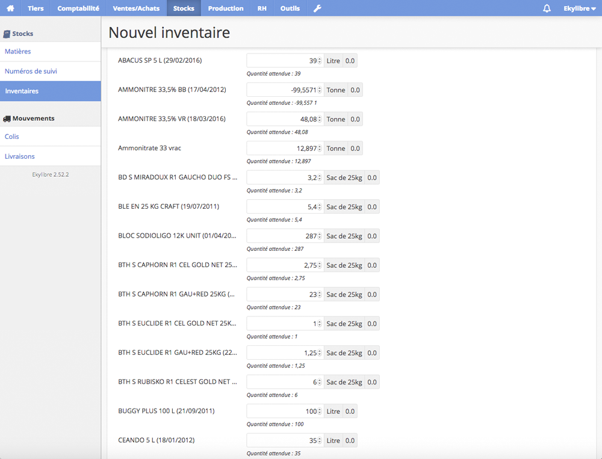
configuration à faire pour
Vous pouvez ajouter des tiers dans l'application qui participent à l'activité générale de votre ferme : employés, clients, fournisseurs. Notez que si vous souhaitez donner des autorisations à des tiers pour intervenir dans l'application, vous devrez créer des utilisateurs (détaillé dans le chapitre 8 - Accès).
A – Procédure de création des contacts
Le processus suivant vous guide pour créer de nouveaux contacts dans l'application.
Cliquez sur le lien "Tiers" dans le "Menu principal" ou sur le bouton "Tiers" de la page d'accueil :
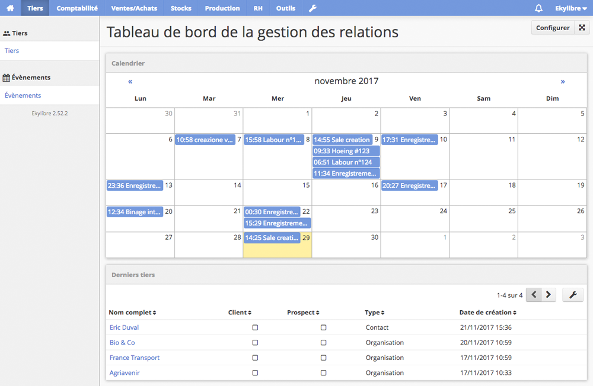
Dans la barre latérale du module, cliquez sur "Tiers" dans la rubrique "Tiers" symbolisée par des personnages.
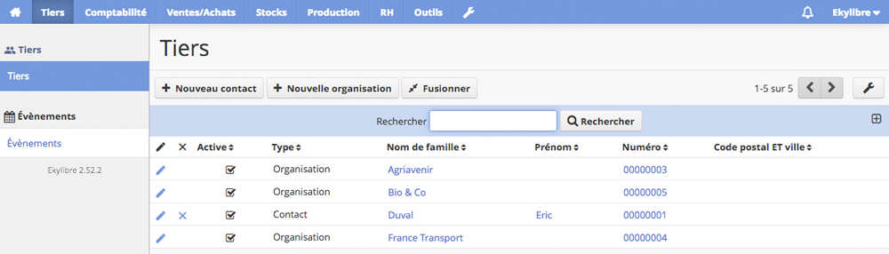
Cliquez sur le bouton "Nouveau contact" ou "Nouvelle organisation" et remplissez tous les champs signalés par une astérisque de couleur rouge avec les informations requises pour le/la définir correctement.
Cliquez sur pour valider l'opération.
pour valider l'opération.
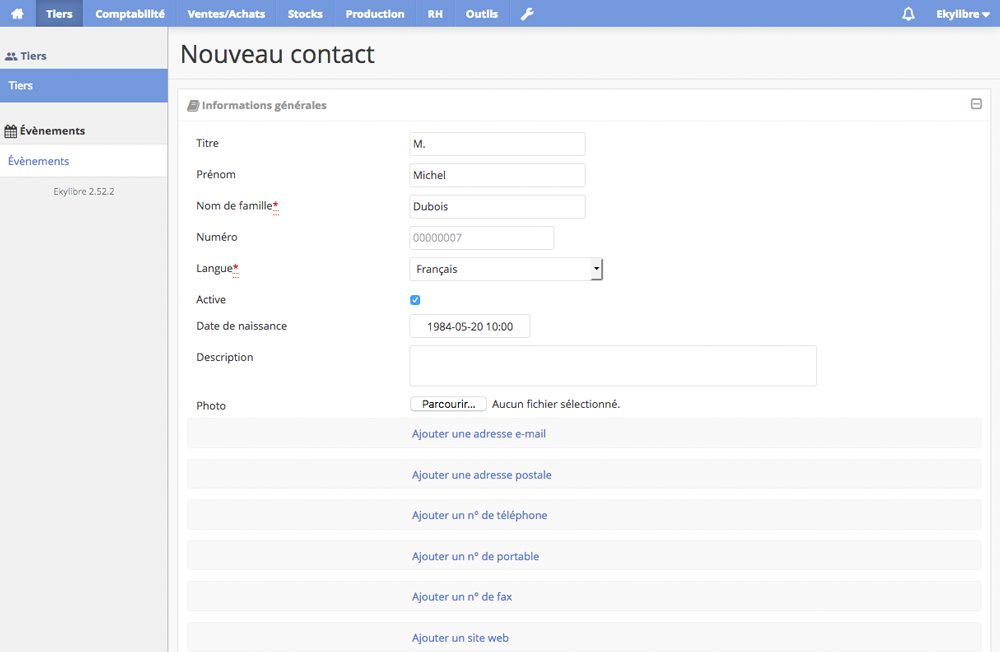
Choisissez si le nouveau contact est un prospect, un client, un fournisseur ou un employé en cochant la case adéquate en face de la fonction choisie.
Cliquez sur pour valider l'opération.
pour valider l'opération.
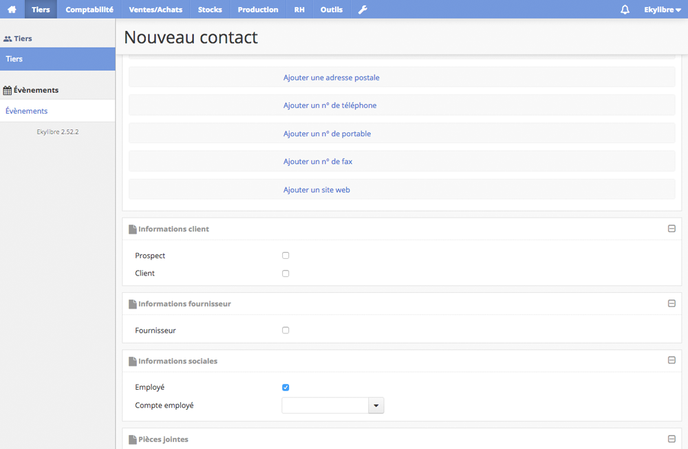
Une fois créé, l'application affiche automatiquement la fiche du nouveau contact.
S'il s'agit d'un prospect, d'un client ou d'un fournisseur (sauf exception), vous pouvez passer au chapitre suivant de ce guide.
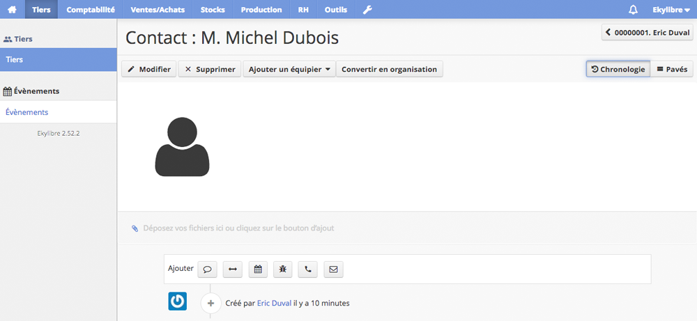
Cliquez sur le bouton "Ajouter un équipier" et sélectionnez la fonction la plus adéquate dans la liste pour convertir le contact en personnel de la ferme.
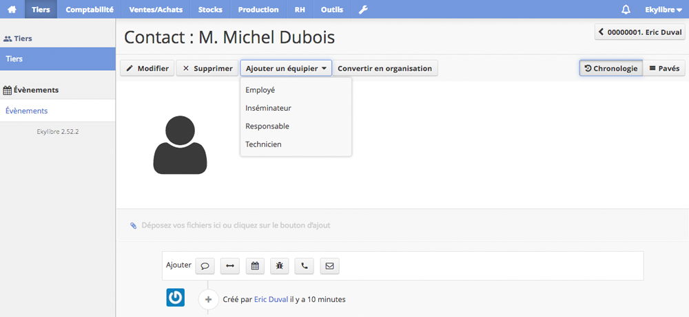
Remplissez tous les champs signalés par une astérisque de couleur rouge avec les informations requises pour le définir correctement. Vous pouvez rattacher l'équipier à sa zone principale de travail dans votre ferme.
Dans les informations générales, choisissez, dans la liste "Personne" le même nom que le nouvel équipier qui est en cours de création sauf si vous avez converti un fournisseur en équipier et que vous souhaitez rattacher plusieurs personnes à celui-ci.
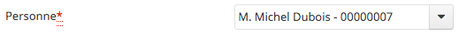
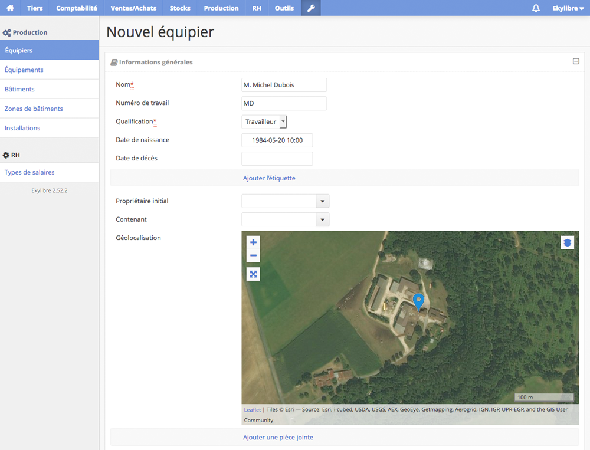
Cliquez sur pour valider l'opération.
pour valider l'opération.
Passez au chapitre suivant de ce guide.